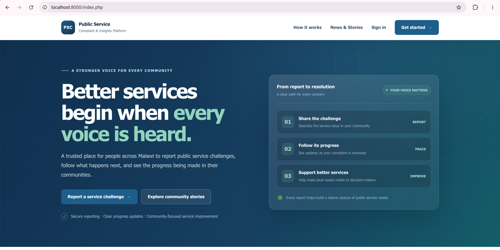
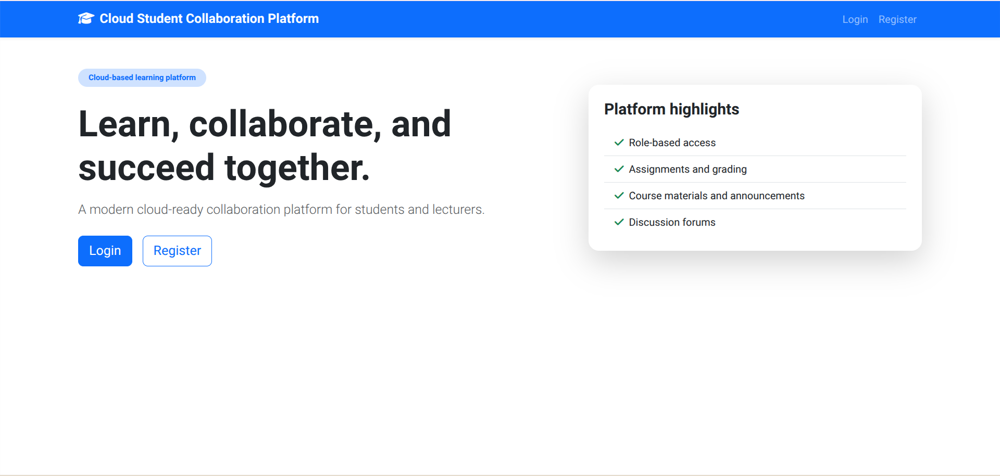
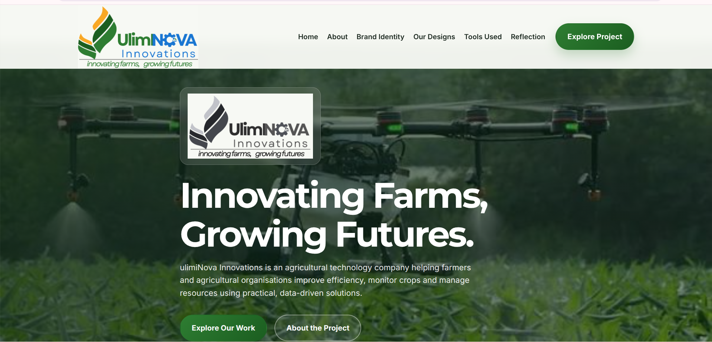

WELCOME TO MY PORTFOLIO
Hello, I'm Wendy Chimango Panchi
A Computer Science Student
Passionate about technology, software development, web development and creating practical solutions through technology.
Interested in: Web Development |
About Me
Get to know more about me, my education and interests.
Who Am I?
My name is Wendy Chimango Panchi. I am a Computer Science student at DMI-St John the Baptist University. I have a strong interest in technology and software development. I enjoy learning new technologies and applying my knowledge to develop practical solutions. My interests include front-end web development, database management, programming and artificial intelligence.
Educational Background
| Institution | Qualification | Programme | Period |
|---|---|---|---|
| DMI-St John the Baptist University | Undergraduate | Bachelor's Degree in Computer Science | Year 3 – Present |
My Technical Skills
Here are some of the technologies and skills I have been learning:
These percentages are illustrative self-assessments. Adjust them to reflect your actual confidence and ability.
Hobbies and Interests
- Listening to music
- Learning new technologies
- Exploring software development
- Developing websites and applications
Career Aspirations
My goal is to become a skilled software developer capable of designing and developing reliable, user-friendly applications. I also aspire to continue improving my knowledge in web technologies, artificial intelligence and database management while contributing to meaningful technology projects.
My Projects
Here are some of the projects I have worked on as part of my learning journey.

Public Service Complaint Analysis System
A web-based system designed to allow citizens to submit and track complaints about public services in Malawi. The system also supports data mining and AI-assisted complaint analysis.
Technologies Used
PHP, MariaDB, Python, HTML, CSS and JavaScript.
View GitHub RepositoryCarePlus Healthcare Management System
A healthcare management project designed to support the management of patient information, appointments and healthcare records.
Technologies Used
PHP, MySQL, HTML, CSS and JavaScript.
View GitHub Repository
Cloud-Based Student Collaboration Platform
A project focused on providing a platform for students to collaborate and work together.
Technologies Used
PHP, MySQL, HTML, CSS and JavaScript.
View GitHub Repository
UlimiNova Innovations Portfolio
an agricultural technology company focused on improving farming through modern, practical and data-driven solutions. The company helps farmers monitor crops, manage irrigation and make better decisions using accessible technology.
Technologies Used
HTML, CSS and JavaScript.
View siteContact Me
Feel free to get in touch with me for professional connections and opportunities.
Let's Connect!
I am always interested in learning, collaborating and connecting with people in the technology field.
Email: panchiwendy088@gmail.com
GitHub: Visit My GitHub Profile